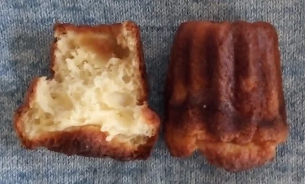
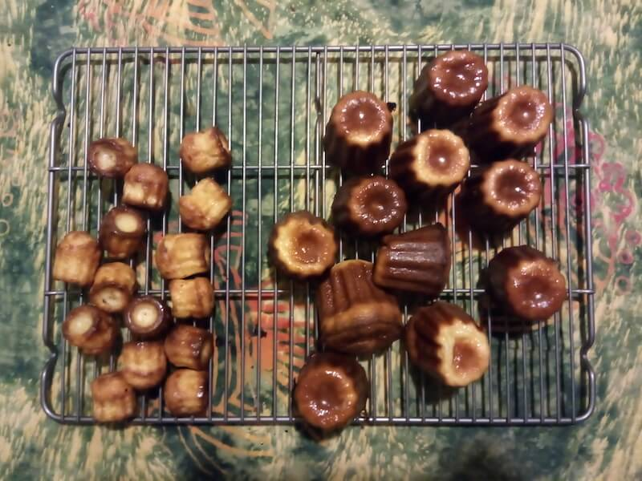

Cannelés recipe
Crispy on the outside, soft on the inside, totally delicious.
Prep Time: 30 minutes - Cook Time: 1 hour minutes - Servings: 12

Ingredients for 12 cannelés:
- 50 cl of milk
- 2 eggs + 2 egg yolks
- 30 grams of butter
- 125 grams of flour
- 200 grams of sugar
- 1 pinch of salt
- 1/2 teaspoon vanilla extract
- 3 soup spoon of rum
Tools:
- Cannelés pan
- Sifter
- Cooling rack
- Mixing bowl
Instructions:
- Boil the milk with the butter and vanilla.
- Meanwhile, beat the eggs.
- Add the sifted flour, sugar and salt to the eggs.
- Add the boiling milk.
- Mix softly and let it cool down.
- Leave the batter in the fridge for 24 hours.
- Take the batter out of the fridge for at least an hour.
- Add the rum.
- Preheat the oven at 450°F with the cannelés pan.
- Put butter on the molds and sprinkle a little bit of powdered sugar.
- Pour the batter 3/4 up the molds.
- Bake for 10 minutes at 450°F.
- Lower the temperature to 375°F and continue baking for another 50 minutes.
- Take the cannelés out of their molds and let them cool down.

Yes, it's quite a challenge to get it right...